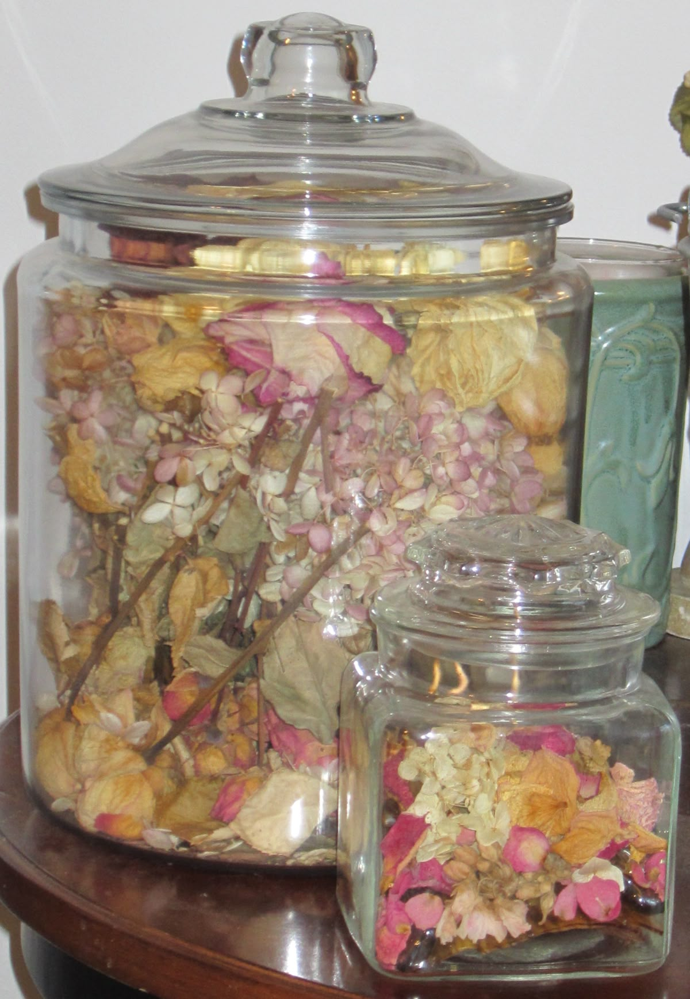
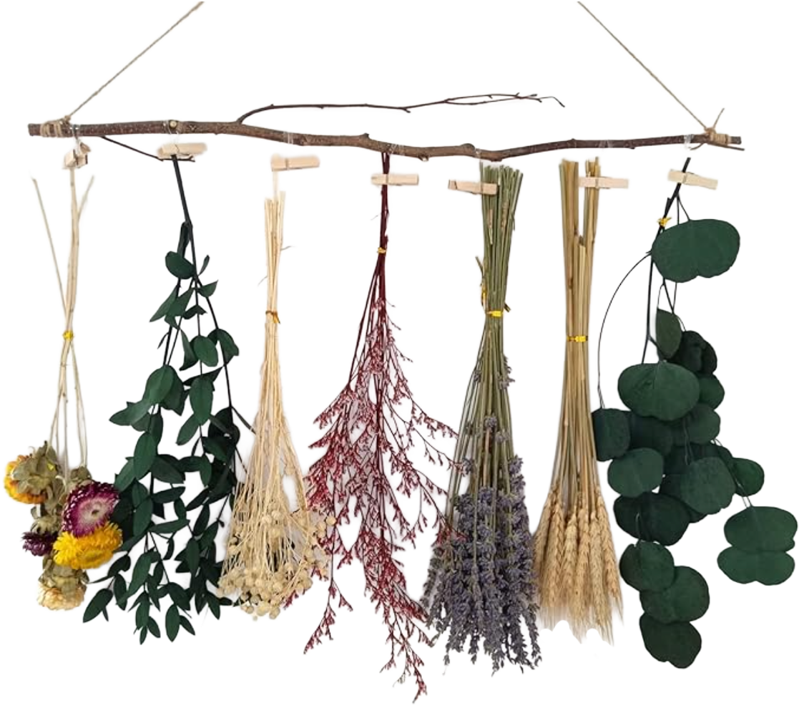

About Drying Flowers: Drying flowers is a creative way to preserve their beauty and extend their life. Air drying, pressing, silica gel, microwaving, or glycerin all work for different flower types.
Personal Thoughts: I have lots of dried flowers. Any flower I’ve ever received I’ve kept. I have three vases full of dried flowers. I just don’t see how people can throw them away — they are still beautiful.

